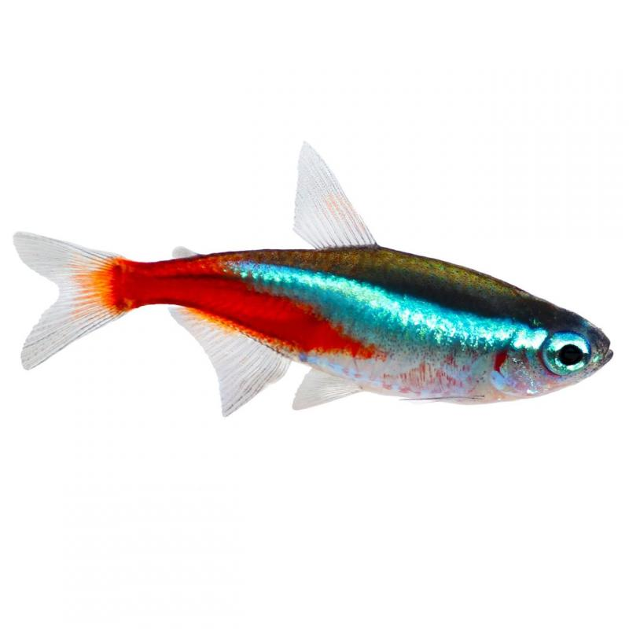
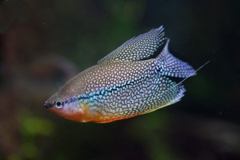
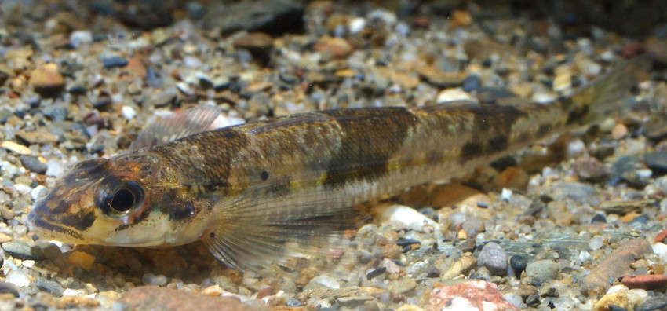
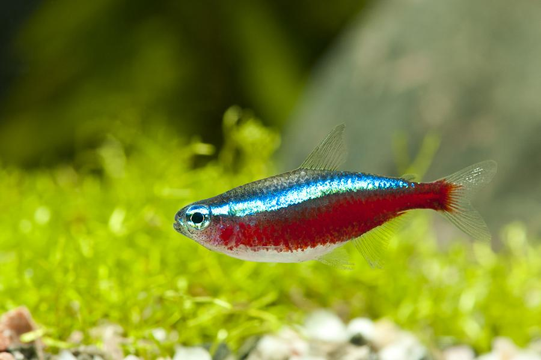

Hello welcome to the PrestonPlayz fish shop
We sell the most unique and exotic fish in the world
The Neon tetra Fish
$ 10 / Neon tetra fish
Though they naturally live in South America, most of the fish in U.S. aquariums do not come from the Amazon. Instead, people breed them in Asia, and we import the fish from there. This fish is one of the most popular species in freshwater aquariums. People import a whopping 1.8 million of these fish into the United States for this purpose every year! Those iridescent stripes and bright colors aren’t for nothing! The waters that this species inhabits are murky and dark. Iridescent stripes help the fish find one another easily.
Pearl Gourami
$ 15 / Pearl Gourami
The pearl gourami (Trichopodus leerii) is a species of gourami native to Southeast Asia. This fish's appearance has given rise to many popular names, such as the lace gourami and the mosaic gourami. Male specimens of this fish, typical of many gouramis, are generally larger and more colourful than their female counterparts. They exhibit bright orange colouring around the throat region, which at breeding time becomes much brighter and is used to court the female.Diamond Darter
$ 20 / Diamond Darter
The diamond darter was first described in 2008 and is only the second known member of its genus, which also includes the crystal darter, C. asprella Diamond darters have 11-13 spines on their dorsal fins, and 11-15 soft rays. However, their anal fins do not have any spines at all, and only 11-13 soft rays
Cardinal Tetra
$ 10 / Cardinal Tetra
The cardinal tetra (Paracheirodon axelrodi) is a freshwater fish of the characin family (family Characidae) of order Characiformes. The cardinal tetra's appearance is similar to that of the closely related neon tetra, with which it is often confused; the neon's red coloration extends only about halfway to the nose, and the neon's blue stripe is a less vibrant blue. However, many breeders are now producing the fish; in most cases one can determine if the cardinal tetra is bred or wild-caught due to damaged fins on wild caught specimens.